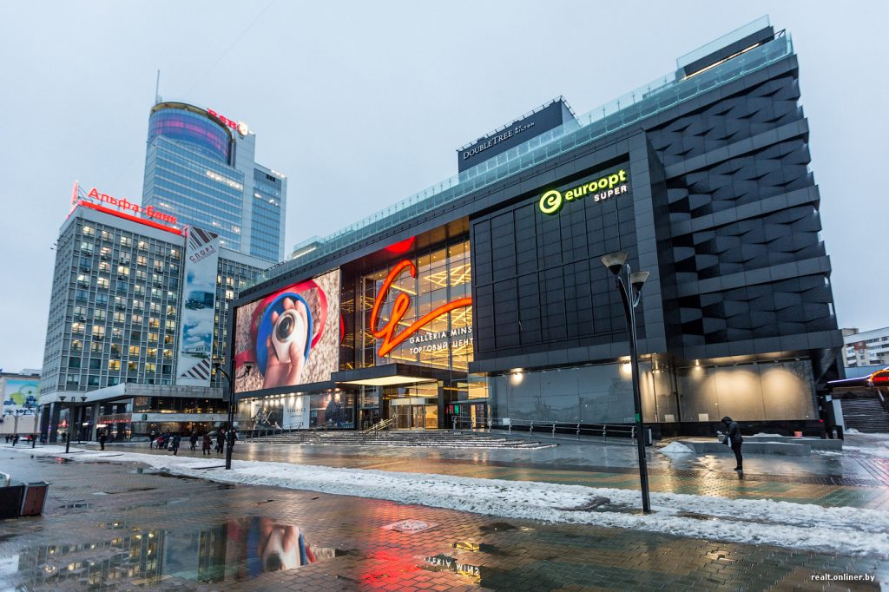
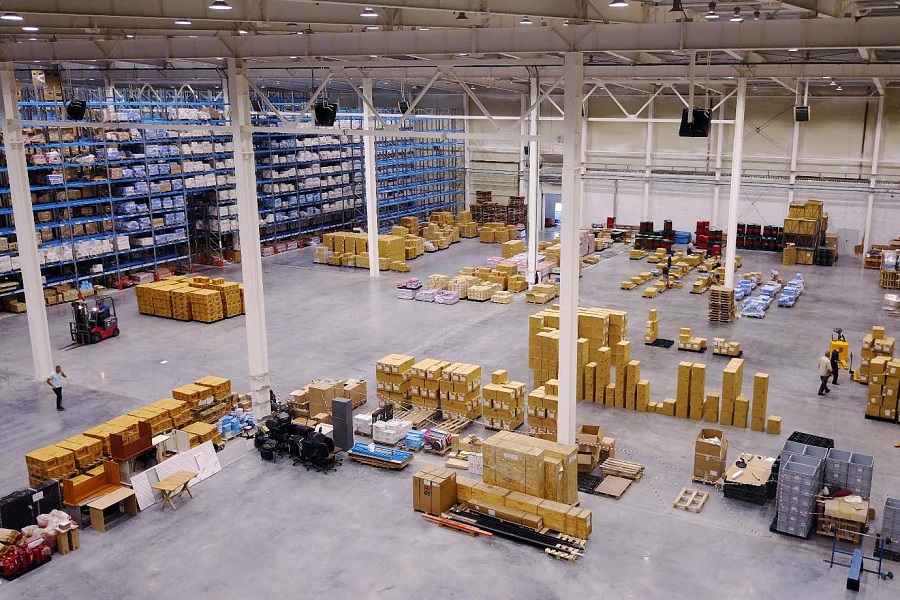
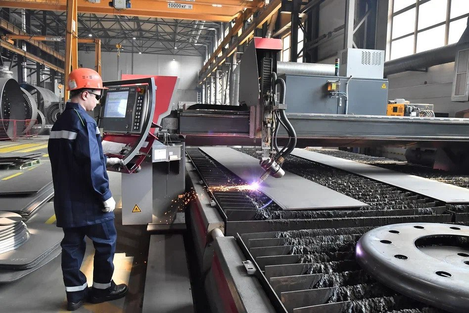

Типы коммерческой недвижимости
Коммерческая недвижимость включает в себя различные типы помещений, каждый из которых подходит для определенных видов или целей бизнеса:
- Офисные помещения
- Торговые площади 
- Складские помещения 
- Производственные площадки 
Как выбрать идеальное помещение для бизнеса
При выборе коммерческой недвижимости следует учитывать несколько ключевых факторов:
- Местоположение
- Размер помещения
- Состояние и ремонт
- Инфраструктура
- Стоимость аренды или покупки
- Цели и специфика вашего бизнеса
Эти факторы играют важную роль в процессе выбора коммерческого помещения. Местоположение является одним из самых критичных аспектов, поскольку хорошо расположенное помещение обеспечит доступность для клиентов и удобство для сотрудников, а также может существенно влиять на видимость вашего бизнеса. Размер помещения тоже имеет значение: оно должно соответствовать потребностям бизнеса, чтобы не ограничивать его рост и не быть чрезмерно затратным. Состояние и ремонт помещения влияют на первоначальные затраты и время, необходимое для его подготовки к эксплуатации. Хорошо отремонтированное помещение требует меньших вложений в ремонт и может быть сразу готово к работе. Инфраструктура вокруг помещения, такая как доступ к транспортным средствам и наличие парковки, также важна, так как она улучшает удобство для клиентов и сотрудников и может повысить эффективность бизнес-процессов. Наконец, стоимость аренды или покупки помещения должна соответствовать вашему бюджету, учитывая не только цену, но и дополнительные расходы, такие как налоги и коммунальные платежи. Оптимальный выбор позволит избежать финансовых трудностей в будущем и обеспечит успешное функционирование бизнеса. При этом вы должны понимать, что искомое помещение должно подходить для вашего бизнеса.
Тенденции рынка коммерческой недвижимости
Рынок коммерческой недвижимости постоянно меняется. Вот некоторые актуальные тренды:
- Рост популярности коворкингов
- Увеличение спроса на экологичные здания
- Развитие технологий "умного офиса"